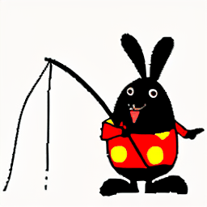
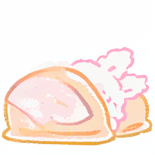
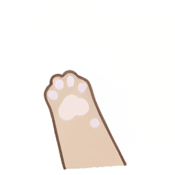

VSD2M: A Large-scale Vision-language Sticker Dataset for Multi-frame Animated Sticker Generation
Abstract
As a common form of communication in social media, stickers win users’ love in the internet scenarios, for their ability to convey emotions in a vivid, cute, and interesting way. People prefer to get an appropriate sticker through retrieval rather than creation for the reason that creating a sticker is time-consuming and depends on rule-based creative tools with limited capabilities. Nowadays, advanced text-to-video algorithms spawn lots of general video generation systems for users to customize high-quality photo-realistic videos by only providing simple text prompts. However, creating the customized animated sticker, which has lower frame rates and more abstract semantics than video, is greatly hindered by difficulties in data acquisition and incomplete benchmarks. To facilitate the exploration of researchers in animated sticker generation (ASG) field, we firstly construct the currently largest vision-language sticker dataset named ``VSD2M'' at a two-million scale that contains static and animated stickers. Secondly, to enhance the performance of traditional video generation methods on ASG tasks with discrete characteristics, we come up with a Spatio Temporal Interaction (STI) layer that uses semantic interaction and detail preservation to alleviate the insufficient utilization of information. Moreover, we train baselines with several video generation methods (e.g., transformer-based, diffusion-based methods) on VSD2M and conduct a detailed analysis to establish systemic guidances on ASG task. To the best of our knowledge, this is the first large-scale benchmark for multi-frame animated sticker generation, and we hope that this work can give valuable inspiration for other scholars in intelligent creation.
VSD2M Dataset
STI Layer for Sticker Generation
| 一个小兔子在放鞭炮 |  | |||
| 一只可爱的小熊在说你好 | ||||
| 卡通小狗做比心动作 | ||||
| 卡通小狗做比心动作 | ||||
| VideoLDM | VideoFactory | I2VGen-XL | Ours |
 |
 |
 |
||
 |
 |
 |
||
|  | ||||
|  | ||||
BibTeX
If you use our work in your research, please cite:
@misc{anonymous2024vsd2m,
title={VSD2M: A Large-scale Vision-language Sticker Dataset for Multi-frame Animated Sticker Generation},
author={Anonymous},
year={2024},
archivePrefix={arXiv},
primaryClass={cs.CV}}